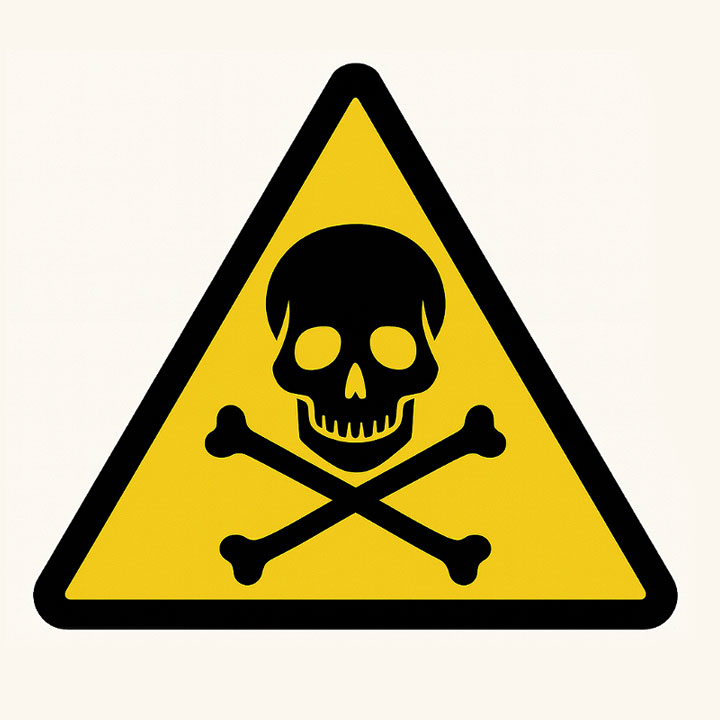
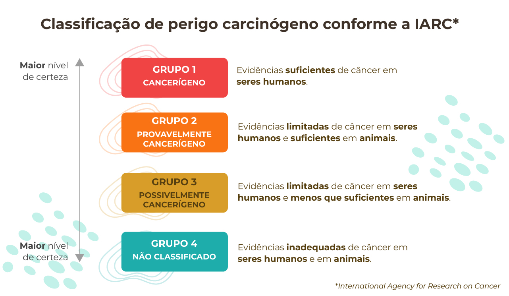
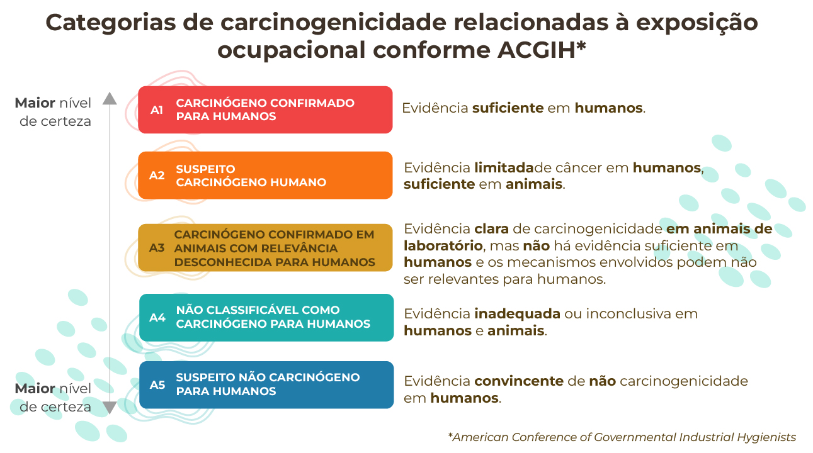
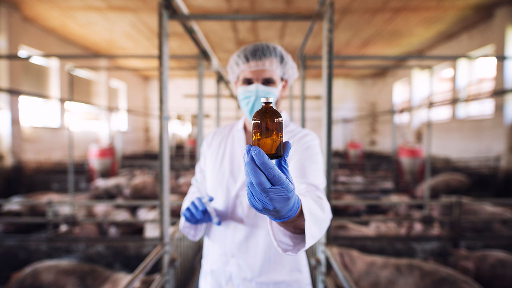
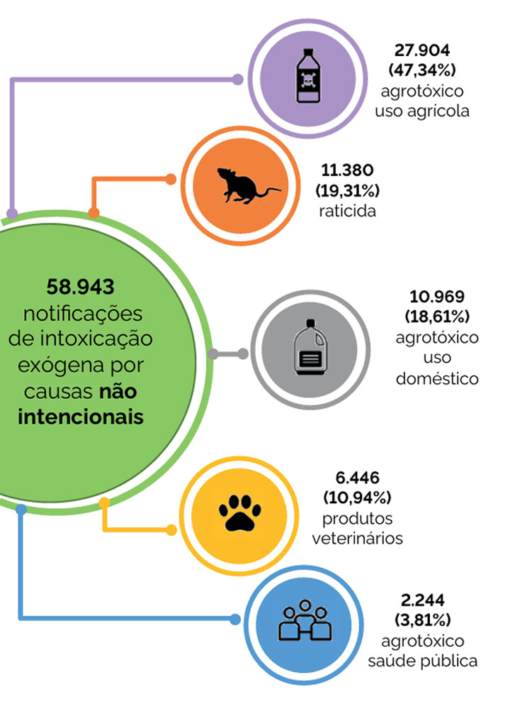
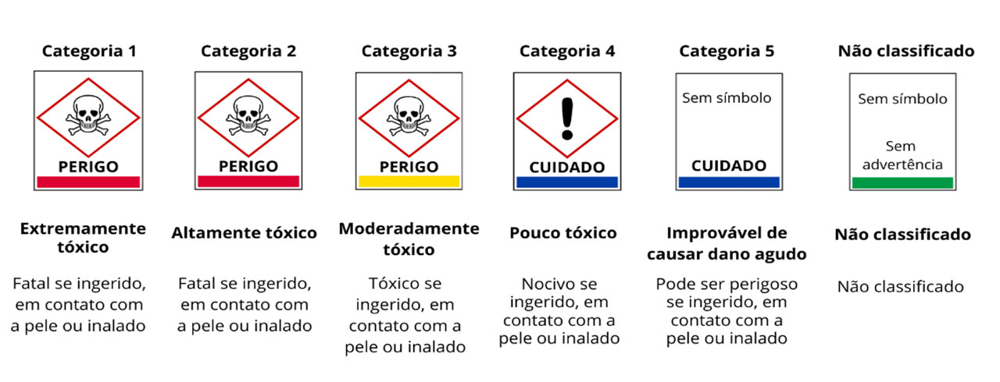

MÓDULO 2 | AULA 4 Toxicologia dos alimentos e dos agrotóxicos
Classificação dos contaminantes alimentares
As substâncias tóxicas presentes nos alimentos podem ser produtos endógenos naturais, introduzidas por contaminantes, resultar de etapas de produção, processamento e preparação dos alimentos, ou ainda serem resíduos de produtos de uso intencional.
Contaminantes naturais
As micotoxinas são metabólitos naturais não essenciais produzidos por fungos filamentosos. Essas substâncias podem ser encontradas nos alimentos ainda no campo (antes da colheita) e durante o seu armazenamento. Aproximadamente 200 espécies diferentes de fungos filamentosos, como Aspergillus, Penicilium e Fusarium (sp), têm sido identificadas, e centenas de diferentes micotoxinas já foram descobertas. Tal diversidade resulta em diferentes características biológicas e físico-químicas.
As micotoxinas de maior relevância para a saúde pública e com maior impacto econômico, por sua ocorrência frequente em alimentos e rações, são as:
- Aflatoxinas
- Fumonisinas
- Ocratoxina A
- Patulina
- Tricotecenos
- earalenona
As aflatoxinas podem ser produzidas por fungos antes e/ou após a colheita de cereais. Sua ocorrência é influenciada por fatores ambientais e condições de estresse das plantas. Quando ingeridas, as aflatoxinas apresentam efeitos hepatotóxicos. A aflatoxicose aguda pode levar à morte, enquanto a aflatoxicose crônica causar câncer, supressão imunológica e outras condições patológicas de lenta progressão.
As plantas também são fontes de produtos naturais não essenciais denominados substâncias fitoquímicas. Essas substâncias podem ter efeitos benéficos ao ser humano, como os polifenóis e carotenoides, mas também há substâncias nocivas, pois desempenham papel de defesa natural dos vegetais contra outros organismos.
As lectinas são um exemplo de substância fitoquímica que contribui para a defesa das plantas contra insetos e herbívoros, uma vez que elas apresentam propriedades citotóxicas, além de serem tóxicas para os animais superiores. As lectinas, encontradas em diversos legumes consumidos por humanos e animais — como feijão-preto, soja, feijão-de-lima, feijão-vermelho, ervilha e lentilha — merecem especial interesse. Estudos já mostraram que as lectinas isoladas do feijão-preto, quando correspondem a 0,5% da dieta de ratos, provocam atraso no crescimento, enquanto a lectina proveniente do feijão-vermelho, quando aplicada na mesma proporção na dieta desses animais, pode causar morte após duas semanas de ingestão. Embora o cozimento prolongado seja capaz de inativar as lectinas presentes nos legumes, uma característica nutricionalmente relevante das lectinas em vegetais crus é sua resistência ao processo de digestão no trato gastrointestinal.
Apesar da maioria das lectinas vegetais apresentarem toxicidade associada a efeitos antinutricionais de caráter crônico, algumas se destacam por atuarem como toxinas agudas de alta potência. A mais relevante é a ricina, presente na mamona (Ricinus communis). A intoxicação por ricina manifesta-se em poucas horas (geralmente entre duas e três após a ingestão de sementes de mamona ou de material contaminado), provocando sintomas como diarreia, náuseas, vômitos, cólicas abdominais, hemorragias internas e falência hepática, renal e circulatória.
- Assista ao vídeo sobre como evitar a ingestão de alimentos contaminados com micotoxinas.
Contaminantes provenientes de processos/resíduos industriais

A ingestão de metais tóxicos pode ser decorrente da contaminação da água potável (tubulações confeccionadas com chumbo) ou através da cadeia alimentar. Os metais tóxicos podem alcançar os sistemas de abastecimento de água por meio de resíduos industriais e domésticos ou ainda pela chuva ácida, que promove a decomposição do solo e a liberação desses elementos para corpos d’água como os rios e lagos. Uma vez incorporados ao ecossistema, os metais contaminam diferentes alimentos, que posteriormente são ingeridos por seres humanos e animais.
A ATSDR (Agency for Toxic Substances & Disease Registry) destaca quatro elementos na sua lista prioritária de substâncias perigosas:
- Arsênio
- Chumbo
- Mercúrio
- Cádmio
Esses metais apresentam toxicidade elevada, persistem no ambiente e podem se acumular em tecidos humanos, trazendo riscos significativos à saúde. Entenda as características de cada um:
Ocorre em formas inorgânicas e orgânicas, sendo as inorgânicas (arsenito e arsenato) as mais tóxicas. Ele está amplamente distribuído no ambiente, presente no solo, na água subterrânea e em alimentos, especialmente frutos do mar (ostras, mexilhões, camarões e peixes demersais). A água contaminada é uma das principais vias de exposição, como evidenciado em Bangladesh, onde milhões de pessoas foram intoxicadas por níveis superiores a 10 µg/L. Nos alimentos, a maior parte do arsênio em peixes e frutos do mar encontra-se em formas orgânicas menos tóxicas, mas a ingestão crônica de arsênio inorgânico pode levar a lesões cutâneas, alterações cardiovasculares, neuropatias e vários tipos de câncer. No Brasil, a Anvisa estabelece limites máximos de 0,1 a 1,0 mg/kg em diferentes categorias de alimentos.
É um dos metais mais estudados em toxicologia alimentar. Ele pode contaminar alimentos por absorção pelas plantas, deposição atmosférica ou por contato durante o processamento (utensílios de cerâmica vitrificada, cristal, soldas em latas e rolhas de vinho). Estudos mostram que vegetais, cereais e derivados, além de leite e queijos, podem apresentar níveis significativos do metal. A absorção do chumbo é maior em crianças, que também são mais suscetíveis aos seus efeitos tóxicos: atraso no desenvolvimento cognitivo, anemia, nefropatias e alterações cardiovasculares. A Food Standards Agency (Reino Unido) e a FDA (EUA) monitoram rotineiramente sua presença na dieta. Felizmente, a retirada do chumbo tetraetila da gasolina reduziu os níveis ambientais e, consequentemente, a contaminação alimentar.
É liberado no ambiente por atividades industriais, mineração de ouro e combustão de carvão, podendo sofrer transformações químicas e bioacumular-se como metilmercúrio nos organismos aquáticos. Esse composto é altamente lipofílico, atravessa a barreira hematoencefálica e a placenta, sendo o peixe a principal fonte dietética. Casos emblemáticos de intoxicação ocorreram em Minamata (Japão, década de 1950) e no Iraque (1972), com manifestações neurológicas graves, malformações congênitas e alta mortalidade. Estima-se que 95% do metilmercúrio presente em peixes seja absorvido pelo trato gastrointestinal humano. Espécies predadoras como atum e tubarão acumulam maiores concentrações. A OMS recomenda limites rigorosos de ingestão, principalmente para gestantes e crianças, devido ao risco de neurotoxicidade fetal.
É encontrado associado ao zinco e ao chumbo na natureza e é liberado no ambiente por mineração, fundição e uso de fertilizantes fosfatados. É um metal persistente, com meia-vida biológica longa, acumulando-se principalmente nos rins e fígado. Na dieta, os principais veículos são mariscos, vísceras (particularmente rins e fígado de animais) e cereais como trigo e arroz. No Japão, a exposição elevada levou à doença itai-itai, caracterizada por osteomalácia e nefropatia grave. Crianças e indivíduos com deficiência de ferro apresentam maior absorção intestinal do metal. A toxicidade crônica inclui disfunção renal, desmineralização óssea e aumento do risco de câncer. A OMS estabeleceu limites de ingestão semanal provisória, e a Anvisa define valores máximos de 0,05 a 1,0 mg/kg em alimentos.
É o nome genérico utilizado para descrever vários derivados clorados da bifenila. As BPCs geralmente encontradas no comércio consistem em misturas de diferentes substâncias que apresentam porcentagens distintas de cloro. A produção de BPCs começou em 1930 e alcançou seu ponto máximo em 1970.
Por causa da natureza incolor, oleosa e altamente estável dessas substâncias, as BPCs foram amplamente utilizadas em plastificantes, tintas, lubrificantes e fitas isolantes. A alta estabilidade e a solubilidade em lipídios das BPCs tornaram essas substâncias extremamente persistentes no ambiente. Pesquisas sobre os níveis de BPCs no tecido adiposo humano nos Estados Unidos e pesquisas sobre as BPCs no leite humano revelaram níveis geralmente na faixa de 0,1 a 3,0 ppm e foram associados, principalmente, ao consumo de pescado contaminado.
Assista aos vídeos a seguir a respeito da contaminação de peixes com mercúrio, dos óbitos causados por contaminação por chumbo e da presença de arsênio no arroz.
Contaminantes formados no processamento de alimentos
Até meados dos anos 2000, acreditava-se que a exposição humana à acrilamida resultasse do contato cutâneo com monômeros sólidos e da inalação de poeira e vapor em ambientes de trabalho. No entanto, atualmente, a principal preocupação pública com relação à exposição à acrilamida está concentrada na ingestão de alimentos ricos em amido submetidos a altas temperaturas, como as batatas chips e as batatas fritas.
Exames laboratoriais mostraram que a acrilamida causa vários tipos de tumores em ratos e camundongos. Quando ratos machos e fêmeas receberam 3,0 mg/kg de peso corporal/dia de acrilamida pela água potável durante dois anos, observou-se aumento na incidência de tumores de escroto, glândula suprarrenal, tireoide, mama, cavidade oral e útero. No entanto, não existem evidências definitivas de que a acrilamida produza tumores em seres humanos. Estudos epidemiológicos realizados com trabalhadores de fábricas que produzem acrilamida não forneceram evidências conclusivas da carcinogenicidade humana. A EPA (Environmental Protection Agency) classificou a acrilamida como B2, um provável carcinógeno humano, a IARC (International Agency for Research on Cancer) classificou como 2A, um possível carcinógeno humano, e a ACGIH (American Conference of Governmental Industrial Hygienists) classificou como A3, carcinógeno confirmado para animais, com relevância desconhecida para seres humanos.
Entenda a classificação de perigo carcinógeno conforme a IARC (International Agency for Research on Cancer):

A ACGIH (American Conference of Governmental Industrial Hygienists) define categorias de carcinogenicidade relacionadas à exposição ocupacional:

American Conference of Governmental Industrial Hygienists (ACGIH)">Os hidrocarbonetos aromáticos policíclicos (HAPs) estão amplamente presentes no ambiente e em elementos ou objetos do nosso cotidiano, como:
- Água
- Solo
- Poeira
- Fumaça dos cigarros
- Pneus de borracha
- Gasolina
- Grãos de café torrados
- Pão
- Carne tostada e muitos outros alimentos
Os HAPs são formados principalmente a partir dos carboidratos cozidos em altas temperaturas. Grelhar carne sobre cerâmica quente ou briquetes de carvão vegetal possibilita que a gordura derretida entre em contato com uma superfície muito quente. As reações que se seguem dão origem a HAPs. Esses produtos sobem com os vapores resultantes do cozimento e são depositados sobre a carne.
É importante estar consciente da presença de HAPs carcinogênicos nos alimentos, e o perigo que essas substâncias representam para a saúde pública global deve ser avaliado e controlado.
O HAP carcinogênico mais conhecido é o benzo[a]pireno (BP). Uma dieta com 25 ppm de BP administrada a camundongos durante 140 dias produziu leucemia e adenomas de pulmão, além de tumores gástricos. Mais de 60% dos ratos tratados topicamente com aproximadamente 10 mg de BP três vezes por semana desenvolveram tumores de pele. A incidência de tumores de pele caiu para cerca de 20% quando a dose administrada era de aproximadamente 3 mg, três vezes por semana. No entanto, em doses acima de 10 mg, a incidência de tumores cutâneos aumentou para quase 100%.
- Assista ao vídeo “Acrilamida - o que é e como evitar riscos à saúde humana” para entender como evitar riscos à saúde em decorrência da acrilamida em alimentos.
Resíduos de substâncias de uso intencional
Os medicamentos veterinários são utilizados no tratamento, controle e prevenção de doenças, assim como para a promoção do crescimento de animais produtores de alimentos. Mesmo com a aplicação de boas práticas veterinárias, o uso desses produtos pode resultar em resíduos nos alimentos de origem animal, como carne, leite e ovos.

A exposição alimentar aos resíduos de medicamentos veterinários (RMV) pode provocar efeitos adversos à saúde humana, tanto agudos quanto crônicos. Reações anafiláticas, apesar de raras, têm sido relatadas em indivíduos sensíveis após o consumo de leite e carne contendo resíduos de penicilina. No entanto, a maior preocupação são as consequências à saúde decorrentes da exposição alimentar crônica aos RMV em doses subagudas. Outra preocupação diz respeito à questão do uso de antimicrobianos e a disseminação da resistência bacteriana, em especial para espécies bacterianas de interesse em medicina humana.
No Brasil, o Plano Nacional de Controle de Resíduos e Contaminantes – PNCRC/Animal é ferramenta de gerenciamento de risco adotada pelo MAPA (Ministério da Agricultura, Pecuária e Abastecimento) com o objetivo de promover segurança química dos alimentos de origem animal produzidos pelos estabelecimentos brasileiros registrados junto ao SIF (Serviço de Inspeção Federal).
No âmbito do programa são elaborados planos anuais de amostragem e teste de ovos, leite e mel encaminhados para processamento e animais encaminhados para abate em estabelecimentos sob Inspeção Federal. Os testes realizados verificam o atendimento dos limites máximos de resíduos químicos em produtos animais aplicáveis no Brasil, os quais são estabelecidos pela Agência Nacional de Vigilância Sanitária – Anvisa.
Os agrotóxicos contaminam águas e alimentos em regiões agrícolas, tanto pelo uso direto na lavoura ou/e indiretamente pela água contaminada que é usada no preparo ou processamento de alimentos. Alguns se degradam rapidamente, enquanto outros permanecem persistentes, pouco solúveis ou não voláteis, aumentando sua dispersão e entrada na cadeia alimentar.
- Assista ao vídeo “Como os agrotóxicos acometem a saúde humana?”
No Brasil, o monitoramento desses resíduos é realizado principalmente pelo Programa de Análise de Resíduos de Agrotóxicos em Alimentos (PARA), coordenado pela Anvisa desde 2001. O programa coleta amostras de alimentos de origem vegetal em diversas regiões e verifica se os resíduos estão dentro dos Limites Máximos de Resíduos (LMRs) e se os agrotóxicos são autorizados para cada cultura. Os resultados do PARA são essenciais para avaliar a segurança alimentar, orientar fiscalizações e proteger a população contra o uso de substâncias proibidas ou em excesso.
Para entender sobre os limites máximos tolerados de contaminantes em alimentos, leia a Resolução - RDC nº 722, de 1° de julho de 2022.
O que são os agrotóxicos e para que serve a toxicologia dos agrotóxicos?
Os agrotóxicos são substâncias químicas ou mistura de substâncias destinadas a controle de organismos considerados pragas, sejam esses animais, vegetais, fungos ou micro-organismos. São usados, sobretudo na agricultura, para combater pragas, ervas daninhas ou doenças nas plantas e como agentes de controle de vetores nos programas de saúde pública.
A maioria dos agrotóxicos é composta por misturas ou formulações que incluem um ou mais ingredientes ativos, além de aditivos, solventes, coadjuvantes, excipientes e impurezas, os quais podem apresentar toxicidade igual ou até superior à do próprio princípio ativo.
Os agrotóxicos atuam sobre organismos-alvo, mas também podem atingir organismos não-alvo sendo prejudiciais à saúde humana e ao meio ambiente. O Brasil é o maior consumidor mundial desses produtos e registrou 58.943 casos de intoxicação exógena não intencional entre 2013 e 2022. A maioria das notificações envolveu uso agrícola (47,3%), seguido de raticidas (19,3%), agrotóxicos domésticos (18,6%), produtos veterinários (10,9%) e de saúde pública (3,8%). As exposições acidentais representaram 51,8% dos casos.

Devido a isso, a Toxicologia dos Agrotóxicos constitui um importante tópico de estudo dentro da Toxicologia com o papel de entender como esses produtos afetam os organismos vivos em especial a saúde humana. No Brasil, o registro de agrotóxicos é regulamentado pela Lei 14.785/2023, que atualiza e consolida as normas da antiga Lei nº 7.802/1989, definindo critérios para registro, fiscalização e avaliação de riscos desses produtos. Nessa estrutura, o Ministério da Agricultura e Pecuária (MAPA) é responsável pelo registro técnico, o Instituto Brasileiro do Meio Ambiente e dos Recursos Renováveis (Ibama) avalia os impactos ambientais, e a Anvisa avalia os riscos à saúde humana.
A Anvisa realiza testes toxicológicos em animais por diferentes vias de exposição — oral, dérmica, ocular e respiratória — para determinar a DL₅₀, ou seja, a dose capaz de causar a morte de 50% dos indivíduos. Com base nesses resultados, os produtos são classificados quanto à toxicidade aguda conforme a RDC nº 296/2019, que segue os critérios do Sistema Globalmente Harmonizado de Classificação e Rotulagem de Produtos Químicos (GHS), que padroniza pictogramas, sinais de alerta e frases de risco. Dessa forma, os rótulos dos produtos formulados indicam claramente os efeitos observados e os cuidados necessários para manuseio seguro. Além da toxicidade aguda, atualmente também são exigidos estudos sobre o potencial mutagênico, toxicidade reprodutiva, potencial carcinogênico e neurotoxicidade.
Veja as categorias toxicológicas e suas respectivas cores de faixa.

Como ocorre a exposição aos agrotóxicos e quais são os grupos mais vulneráveis?
A exposição aos agrotóxicos pode ocorrer de forma acidental, intencional, ocupacional — como na preparação, aplicação e manipulação dos produtos durante o trabalho agrícola — ou ambiental, por exemplo, pelo consumo de água e alimentos contaminados ou pela proximidade de áreas pulverizadas.
A gravidade de uma intoxicação varia conforme:
- Via e tempo de exposição ao agente;
- Toxicidade e concentração do produto químico;
- Condições ambientais no momento do contato;
- Rapidez no atendimento médico, que pode reduzir danos.
Embora toda a população possa estar sujeita a algum nível de exposição, certos grupos apresentam maior risco devido à frequência e intensidade do contato com esses produtos. Com isso, os trabalhadores que estão envolvidos na produção, no transporte, na mistura e no carregamento e na aplicação desses produtos, bem como os que trabalham na colheita das lavouras pulverizadas são populações mais vulneráveis.
- Assista ao vídeo “Quais são os impactos dos agrotóxicos para trabalhadores rurais e pessoas próximas às plantações?” para entender melhor as ameaças à saúde dos trabalhadores rurais pela exposição aos agrotóxicos.
Qualificação da ação tóxica
A maioria dos agrotóxicos são xenobióticos, ou seja, substâncias estranhas ao organismo, sem mecanismos fisiológicos específicos para sua eliminação. Por isso, é fundamental compreender sua toxicocinética e toxicodinâmica, bem como os efeitos associados a cada classe química. Esse conhecimento permite entender como diferentes agrotóxicos, conforme seu uso (inseticida, herbicida ou fungicida) e estrutura molecular, desencadeiam tipos específicos de toxicidade. Entenda cada um dos conceitos a seguir:
Inclui os processos de absorção, distribuição, metabolização e excreção, determinando quanto do agrotóxico chega aos tecidos e por quanto tempo permanece ativo no organismo.
Refere-se aos mecanismos de ação, à interação do agrotóxico com células e sistemas biológicos, e aos efeitos resultantes, como neurotoxicidade, irritação ou alterações metabólicas.
- Assista ao vídeo sobre Intoxicação por Agrotóxicos na APS (parte 1) para aprender sobre os principais sintomas e formas de tratamento relacionados à intoxicação por OFs e carbamatos.
Inseticidas
Vamos iniciar falando das classes químicas destinadas ao uso como inseticidas que é a terceira classe de uso mais comercializada no Brasil, representando 12,14% das 755.489 toneladas de ingredientes ativos (químicos) comercializados em 2023 segundo o IBAMA:
Os organofosforados (OFs) e os carbamatos são, principalmente, inseticidas inibidores da acetilcolinesterase, mas também podem atuar como acaricidas, nematicidas, fungicidas e herbicidas. Alguns OFs (aldicarbe e carbofurano) e carbamatos (terbufós e forato) também compõem o produto ilegal conhecido como “chumbinho” utilizado como raticida e responsável por graves intoxicações e óbitos no Brasil.
A absorção dos organofosforados e carbamatos ocorre por todas as vias e a distribuição é ampla, com maior acúmulo hepático para os carbamatos. No fígado, são metabolizados em compostos mais hidrossolúveis e menos tóxicos. Contudo, alguns organofosforados podem sofrer dessulfuração oxidativa e formar compostos oxons que são mais tóxicos. A meia-vida desses agrotóxicos varia de minutos a poucas horas e a eliminação ocorre principalmente pela urina e pelas fezes, sendo que 80 a 90% da dose absorvida é eliminada em 48 horas.
OFs e carbamatos causam toxicidade ao bloquear a acetilcolinesterase, que leva ao acúmulo de acetilcolina e provoca o estímulo contínuo dos nervos, músculos e parte do sistema nervoso central. Nos OFs, a inibição é irreversível, podendo causar neuropatia tardia como efeito crônico, enquanto nos carbamatos é reversível e a enzima se regenera rapidamente.
Os inseticidas organoclorados foram muito usados na agricultura, saúde pública e residências, mas a maioria foi proibida ou restrita desde a década de 1970 devido à elevada persistência ambiental e bioacumulação. Esses compostos incluem o diclorodifeniltricloroetano (DDT), lindano e toxafeno. Apesar das diferenças em absorção e metabolismo, os efeitos tóxicos em humanos são semelhantes.
A absorção ocorre pela pele, trato digestivo e respiratório e se acumulam principalmente no tecido adiposo, fígado, rins, SNC, leite materno e tecido fetal. Eles induzem enzimas hepáticas, são metabolizados por decloração, oxidação e conjugação, e eliminados principalmente pela bile e urina. A circulação entero-hepática retarda a excreção, fazendo com que alguns compostos permaneçam no organismo por longos períodos.
Os organoclorados estimulam o sistema nervoso central, alterando a atividade de canais iônicos e enzimas como Na⁺-ATPase, K⁺-ATPase e Ca²⁺/Mg²⁺-ATPase. O DDT prolonga a abertura dos canais de sódio axonais, enquanto ciclodienos, mirex e lindano atuam nos terminais pré-sinápticos, e alguns compostos (lindano, toxafeno, ciclodienos) inibem canais de cloro regulados pelo GABA. Além disso, vários organoclorados (DDT/DDE, clordano, toxafeno, mirex, lindano e endosulfan) são desreguladores endócrinos, podendo afetar o desenvolvimento e a função de órgãos e aumentar a susceptibilidade a doenças ao longo da vida.
Os piretroides são inseticidas sintéticos neurotóxicos derivados das piretrinas naturais, compostos extraídos das flores do crisântemo e são amplamente usados na agricultura, pecuária, controle de ectoparasitas em humanos, domicílios e campanhas de saúde pública.
São rapidamente absorvidos pelo organismo, principalmente via oral (36%), e pouco pela pele (1%). Distribuem-se rapidamente e, por serem lipossolúveis, podem penetrar no cérebro com a ajuda de glicoproteínas transportadoras. A biotransformação ocorre principalmente no fígado e no plasma e os produtos resultantes são eliminados rapidamente pela urina.
Os piretróides são neurotóxicos seletivos e potentes que atuam principalmente nos canais de sódio aumentando o tempo de abertura e provocando paralisia temporária (knock-down) especialmente em insetos voadores, mas também podendo afetar mamíferos.
Os neonicotinóides são inseticidas neurotóxicos derivados da nicotina, com exemplos como imidacloprido, tiametoxam e acetamiprido.
São pouco absorvidos pela pele, mas têm alta absorção oral (até 92%), atingindo pico no sangue em cerca de 2,5 horas. No fígado, passam por oxidação, conjugação e hidroxilação, e são eliminados principalmente pela urina, tanto na forma metabolizada quanto inalterada.
No organismo, atuam imitando a acetilcolina, ligando-se aos receptores nicotínicos dos neurônios. Essa ligação gera uma estimulação nervosa contínua e descontrolada, resultando em hiperexcitabilidade do sistema nervoso central.
- Assista ao vídeo sobre Intoxicação por Agrotóxicos na APS (parte 2) para aprender sobre os principais sintomas e formas de tratamento relacionados à intoxicação por organoclorados, neonicotinoides e piretroides.
Herbicidas
Agora vamos falar sobre os herbicidas, a classe de uso mais comercializada no Brasil, representando 55,93% das 755.489 toneladas de ingredientes ativos (químicos) comercializados no Brasil em 2023 segundo fonte do IBAMA. Entenda cada um a seguir:
O Glifosato ou sal isopropilamina de N-(fosfonometil) glicina é o herbicida organofosforado que contribui para cerca de metade das vendas observadas dentro dessa classe de uso e é o agrotóxico mais comercializado no Brasil com nome comercial mais conhecido como Roundup®.
Pode ser absorvido por todas as vias, sendo melhor absorvido pela vida digestiva. Ele é distribuído para o intestino, ossos, cólon e rins sendo que praticamente 100% do produto original é encontrado nos tecidos após absorvido, sendo eliminado principalmente na urina e fezes.
O glifosato, embora seja um organofosforado, difere dos organofosforados clássicos, pois não inibe a colinesterase, não causando o quadro típico de intoxicação colinérgica. Seus efeitos tóxicos estão principalmente ligados à ação irritante sobre pele e mucosas. Nas formulações comerciais, os surfactantes, como a polioxietileno amina, podem potencializar a toxicidade, especialmente após ingestão. Estudos in vitro mostram que o glifosato pode interferir no metabolismo energético mitocondrial, desacoplando a fosforilação oxidativa e prejudicando reações dependentes de energia nas mitocôndrias, o que contribui para alterações no metabolismo celular.
O paraquat é um herbicida da classe química dos bipiridílicos, porém não é mais comercializado no Brasil desde 2020. Contudo, também pertence a essa classe química o dibrometo de diquate (décimo agrotóxico mais comercializado no Brasil em 2023) que é menos tóxico do que o paraquat.
O paraquat tem baixa absorção gastrointestinal (menos de 30%), mas alcança rapidamente níveis séricos elevados. Distribui-se amplamente, acumulando-se em rins, pulmões e músculos, que liberam o composto lentamente, e consegue atravessar a barreira placentária. Na excreção, mais de 90% do que foi absorvido é excretado pelos rins nas primeiras 12 a 24 horas, porém a meia-vida ultrapassa 24 horas em casos de insuficiência renal.
O paraquat possui ação corrosiva levando a lesões locais após exposição oral, cutânea, respiratória, ocular e vaginal. A toxicidade do paraquat está relacionada à geração excessiva de espécies reativas de oxigênio durante reações de oxirredução. Essas reações levam à formação de radicais livres altamente reativos, como o ânion superóxido, levando ao estresse oxidativo que resulta em destruição celular e falência de órgãos.
Os herbicidas clorofenoxiacéticos incluem formas ácidas, sais, aminas e ésteres, e o mais utilizado estando em terceiro lugar de vendas no Brasil é o ácido 2,4 diclorofenoxiacético (2,4-D). Alguns podem conter dioxinas como impurezas de fabricação.
Apresentam fácil absorção pela via digestiva e inalatória, e após serem absorvidos se ligam amplamente a proteínas. No geral, são excretados sem alteração pela urina, e no caso do 2,4 D a meia vida no organismo humano é de 13 a 39 horas.
Estudos indicam que esses herbicidas podem causar: (1) danos estruturais nas membranas celulares, (2) prejudicam o transporte de substâncias e (3) interferir em rotas metabólicas que dependem da acetilcoenzima A (acetil-CoA).
- Assista ao vídeo “Intoxicação por Agrotóxicos na APS. Diagnóstico e tratamento – Herbicidas” para aprender sobre os principais sintomas e formas de tratamento relacionados à intoxicação pelos herbicidas clorofenoxiacéticos, paraquat e glifosato.
Raticidas
Raticida é um produto tóxico utilizado para o controle de ratos e camundongos. Seu uso inadequado pode causar intoxicações em pessoas, animais domésticos e impactos ao meio ambiente, devendo ser manuseado conforme as orientações sanitárias
As cumarinas e indandionas, anticoagulantes amplamente utilizados como raticidas. As cumarinas foram desenvolvidas a partir do fármaco dicumarol, como varfarina e compostos de segunda geração (brodifacum, bromadiolona, difenacoum), além das indandionas (clorofacinona, difacinona, pindona), que têm ação mais potente e prolongada.
A absorção pode ocorrer por todas as vias e apresentam ampla distribuição se ligando, principalmente, a proteínas plasmáticas. São metabolizadas no fígado e eliminadas pela urina e fezes.
As cumarinas e indandionas bloqueiam a regeneração da vitamina K no fígado, impedindo a ativação dos fatores de coagulação e causando sangramentos e aumento do tempo de protrombina (proteína essencial na coagulação sanguínea). O efeito é lento, pois só ocorre quando os fatores já ativos se degradam, e a maior permeabilidade dos vasos aumenta ainda mais o risco de hemorragias.
Fungicidas
Os fungicidas são a segunda classe de uso mais comercializada no Brasil, e vamos falar sobre a classe química dos ditiocarbamatos. Entenda cada um a seguir:
O agrotóxico Mancozebe que configura o segundo lugar de vendas de ingredientes ativos no país em 2023.
A absorção dos ditiocarbamatos é geralmente baixa, o que reduz o risco de intoxicação sistêmica. Após a exposição, podem formar metabólitos tóxicos, como dissulfeto de carbono e etilenotioureia, esta última com potencial carcinogênico em animais.
Esses compostos podem inibir a acetaldeído desidrogenase, causando sintomas semelhantes ao dissulfiram, como náuseas e tontura, especialmente com álcool. A exposição pode causar tremores, danos neurológicos e renais, além de hemólise e alterações visuais e comportamentais. Em casos de exposição crônica, podem ocorrer distúrbios neurológicos mais graves, como o manganismo.
Para finalizar o assunto sobre a toxicologia dos agrotóxicos, assista ao vídeo da professora e pesquisadora Raquel Rigotto sobre os possíveis efeitos crônicos dessas substâncias químicas.
Nesta aula, foram abordados os fundamentos da toxicologia dos alimentos e dos agrotóxicos, destacando as principais fontes de exposição, formas de classificação e marcos regulatórios que orientam a proteção da saúde pública. A análise dos contaminantes alimentares — naturais, industriais, formados no processamento e resíduos de uso intencional — evidenciou como fatores ambientais, produtivos e tecnológicos influenciam os riscos à saúde humana. No campo dos agrotóxicos, a discussão sobre classes químicas, mecanismos de ação, toxicocinética e toxicodinâmica permitiu compreender a diversidade de efeitos agudos e crônicos associados à exposição. O reconhecimento dos grupos mais vulneráveis e dos sistemas de monitoramento reforça a importância da vigilância em saúde e do uso dessas evidências para subsidiar ações de prevenção, regulação e cuidado no âmbito do SUS.